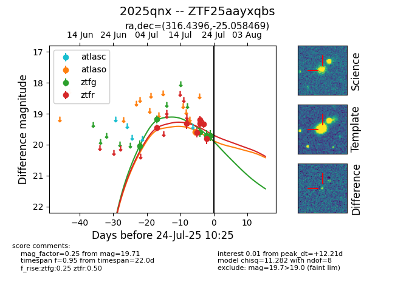

Target 2025qnx at 2025-07-24 10:25, see:
FINK: fink-portal.org/2025qnx
Lasair: lasair-ztf.lsst.ac.uk/objects/2025qnx
ALeRCE: alerce.online/object/2025qnx
TNS: wis-tns.org/object/2025qnx
YSE: ziggy.ucolick.org/yse/transient_detail/2025qnx
alt names
ZTF25aayxqbs (ztf,fink)
2025qnx (tns,yse)
coordinates:
equatorial (ra, dec) = (316.4396,-25.05847)
galactic (l, b) = (21.8016,-39.72102)
photometry
last atlaso=19.60, ztfg=19.71, ztfr=19.81
1 atlaso, 5 ztfg, 7 ztfr detections
